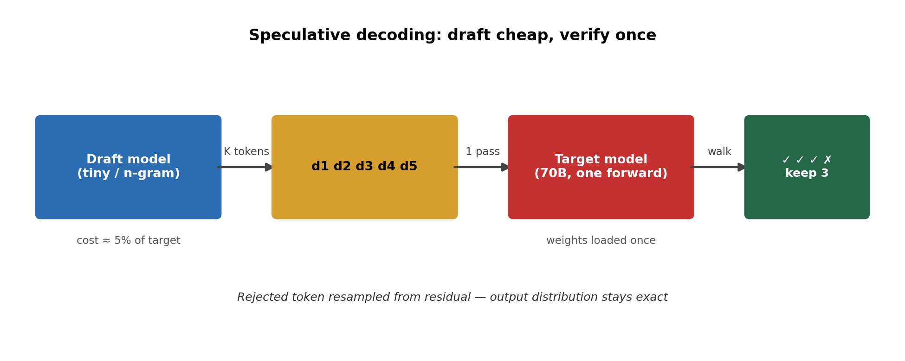
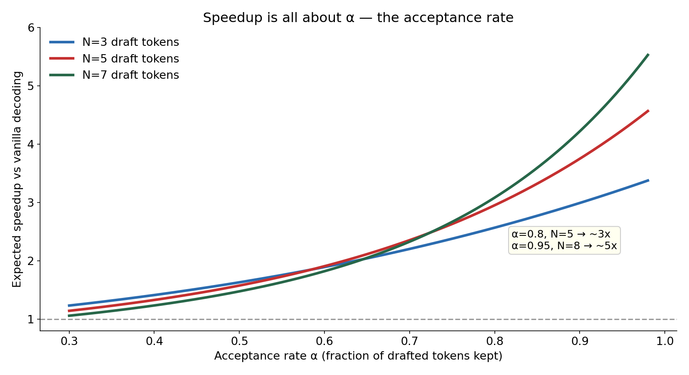
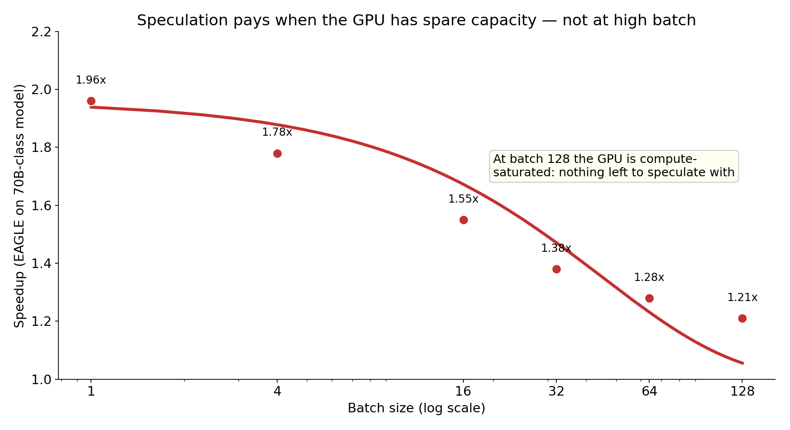
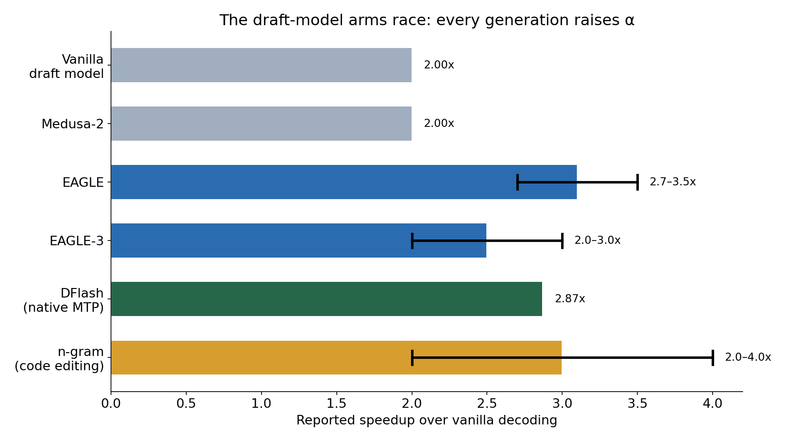

Every token your LLM emits costs one full forward pass through the entire model. Seventy billion parameters loaded from memory, multiplied, discarded — for a single token. Then again. And again. This is why the big models feel slow, and it's the single most expensive habit in production inference.
Speculative decoding breaks the habit. Draft a handful of tokens with something cheap, verify them all in one pass of the big model, keep the ones that check out. Same output distribution — mathematically exact, zero quality loss — at 2–3x the speed. This is the closest thing inference has to a free lunch, and in 2026 it's becoming the default.
ELI5: guess the sentence, then check it once
Imagine you're taking a test and instead of writing one word, waiting for the teacher to grade it, writing the next word, waiting again — you write five words, hand them over once, and the teacher checks all five in one go. The words the teacher agrees with, you keep. The first word they reject, you fix on the spot.
That's speculative decoding. A small, fast draft model (or even a lookup trick) proposes K tokens. The big target model checks all K in a single forward pass — because checking tokens in parallel is nearly free once the weights are already loaded. You accept the longest prefix the big model agrees with, fix the first disagreement, and move on.
The magic is the acceptance rule. When the draft proposes token d, the target accepts it with probability min(1, q(d)/p(d)) — the ratio of how likely the target thinks d is versus how likely the draft thought it was. On rejection, you sample from what's left over. This is textbook rejection sampling, and it guarantees the final tokens come from the target model's distribution exactly. A bad draft doesn't corrupt your output — it just gets rejected more often, and you're back to normal speed. The worst case is no speedup. There is no wrong-answer case.
How it works: the two numbers that matter
Everything about speculative decoding reduces to two numbers:
- α (alpha) — the acceptance rate: the fraction of drafted tokens the target accepts. This is the whole game.
- N — the draft length: how many tokens you speculate per round.
The expected tokens you bank per target forward pass is:
E[accepted] = (1 − α^(N+1)) / (1 − α)
Run the numbers. With α = 0.8 and N = 5, you expect ~3.4 tokens per pass instead of 1. Subtract the draft's own cost (a few percent of a target pass) and you're at roughly 3x speedup. Push α to 0.95 with a great draft and N = 8, and you're flirting with 5x.
So the entire field is really one quest: raise α. Every method below is a different answer to "how do I guess what the big model will say, more accurately, more cheaply?"


SOTA: the draft-model arms race
2023 — vanilla speculative decoding. A small model from the same family drafts (say, a 1B drafting for a 70B). α ≈ 0.6. Speedup around 2x at best. Simple, but the little model's guesses diverge from the big model's too often.
2024 — EAGLE. The insight: don't train a separate little model — train a tiny draft head (one or two transformer layers) that reads the target model's own last-layer hidden states and predicts the next token directly. Because the draft sees the target's internal representation, its distribution tracks the target far more closely. α jumps to 0.6–0.8. The EAGLE paper reports 2.7–3.5x latency speedup on a 70B chat model.
2025 — EAGLE-3. Trains the draft head to predict further ahead and handle its own uncertainty better. NVIDIA's official docs put EAGLE-3 at 2–3x over vanilla decoding. Third-party tests show it beating EAGLE-2 and Medusa-2 by 15–25% in tokens/sec at low batch sizes.
2026 — native multi-token prediction (MTP). The frontier moved into the models themselves: architectures shipping with built-in multi-token prediction heads (Gemma 4 MTP, DSpark, DFlash). No separate draft machinery — the model proposes its own futures. Measured: 2.87x on MATH500 for a 26B-active model with DFlash, 2.68x for Kimi-K2.5, 2.20x for a 122B-active model on native MTP.


The production reality check
Papers report 2–4x. Production says: it depends. A 2026 systematic benchmark (five methods, four models, six workloads, on vLLM) found:
- Speedups shrink with batch size. EAGLE hits ~1.96x on a 70B model at batch size 1 — but only ~1.21x at batch 128. At high concurrency the GPU is compute-saturated; there's no idle capacity left to spend on speculation.
- Verification dominates. 42–95% of execution time is the target model's forward pass. The frontier is wasting less verification on tokens that get rejected.
- No method wins everywhere. EAGLE-3 is the best all-rounder. Draft-model methods shine on 70B+ targets. Plain n-gram lookup wins code editing (2–4x — code repeats itself). Creative writing barely benefits (1.0–1.3x — nothing to guess from).
- Headroom remains. An oracle combining strategies could theoretically hit ~4.9x on code editing; current implementations manage 2–3x.
And the operational catch: in vLLM's 2026 builds, EAGLE-3 is opt-in — you set speculative_config explicitly or you get nothing. Teams that flip it on without measuring α on their real traffic have watched tail latency get worse, not better. Speculation is a bet, and the house edge is your acceptance rate.
Takeaways
- Decode is memory-bound, not compute-bound. Each token drags the full weights through HBM while the GPU's math units sit idle. Speculative decoding converts that idle compute into free tokens.
- The output is exact. Rejection sampling guarantees the token distribution matches the target model bit-for-bit. This is an optimization, not an approximation — the rarest kind of free lunch.
- α is the only metric that matters. Draft length, method choice, overhead — all downstream of acceptance rate. Measure α on your traffic before anything else.
- Batch size is the enemy. Speculation pays when the GPU has spare capacity (low concurrency). At high batch, you're already saturated — save the complexity.
- The draft is disappearing into the model. The arc from separate draft models → EAGLE heads → native MTP says the endgame is models that draft for themselves.
Numbers marked as paper- or vendor-reported come from the cited papers and official docs; treat the EAGLE paper's 2.7–3.5x and NVIDIA's 2–3x as the solid core, and third-party benchmark figures as indicative.